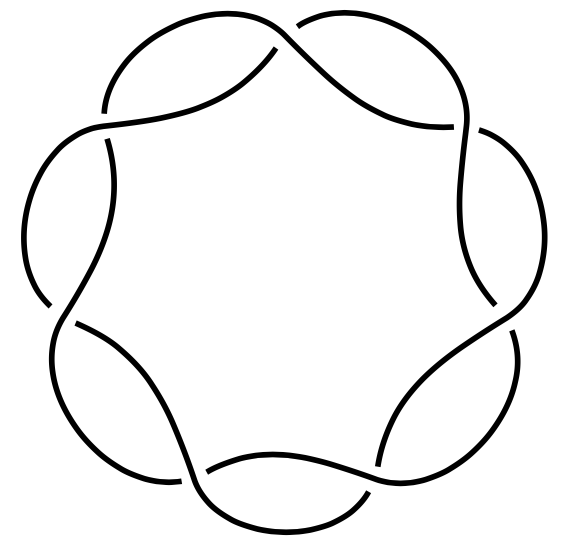
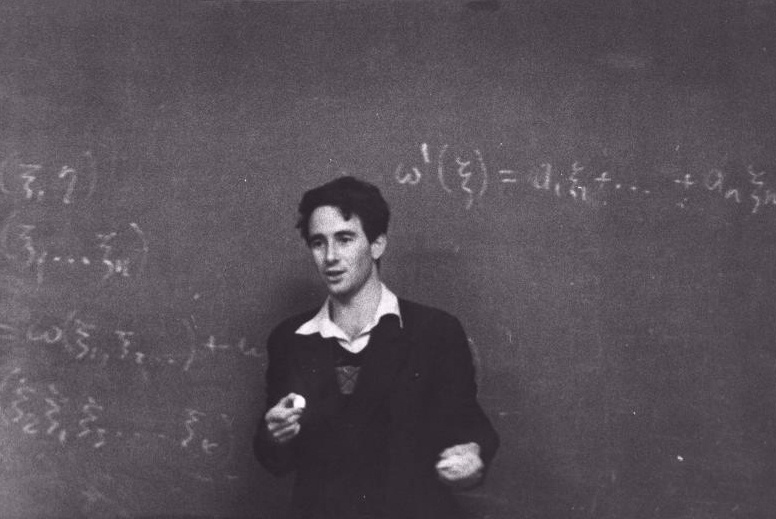

Cat Dynamics are Manifold
Homeomorphisms
- Topology preserving deformation
- Continuous with continuous inverse
- Bend, stretch, twist but no tearing or joining
- Cutting is ok, as long as you glue it back the same way




Arnold’s Cat Map
- Russian, father studied under Emmy Noether.
- geometry, dynamical systems, catastrophe theory, math education, et al.
- Studied under:
- Kolmogorov
- Pontryagin (totally blind @ 14)
- Alexandrov
- Arnold’s principle:
- “Discoveries are rarely attributed to the correct person”


- Solved Hilbert’s 13th problem at age 19.
- Critic of Bourbaki, 1900’s trend toward higher abstraction in mathematics.
- 1974: nominated for Field’s Medal, but then …
- 1999: bike accident in Paris, TBI, amnesia, then full recovery.

“We live in an insane world, in which most governments behave like the pigs under an oak tree in the fable by Krylov, both eating the acorns and digging up its roots, thus destroying the source of their very sustenance.”
“Even more important than the ability to add fractions is the fact that a basic acquaintance with mathematics allows one to distinguish a correct argument from a faulty one. Without this ability, a society turns into a herd, easily manipulated by demagogues. According to Western experts, in the current situation in Russia, the assumption of power by a Hitler is even more likely than it was in Germany in the 1920s.”
— Vladimir Arnold
Read the full article here
\[\begin{bmatrix}x' \\ y'\end{bmatrix} = \begin{bmatrix}1 & 1 \\ 1 & 2\end{bmatrix} \begin{bmatrix}x \\ y\end{bmatrix} \mod 1\]
Visualize the cat map using this link to a 3D model